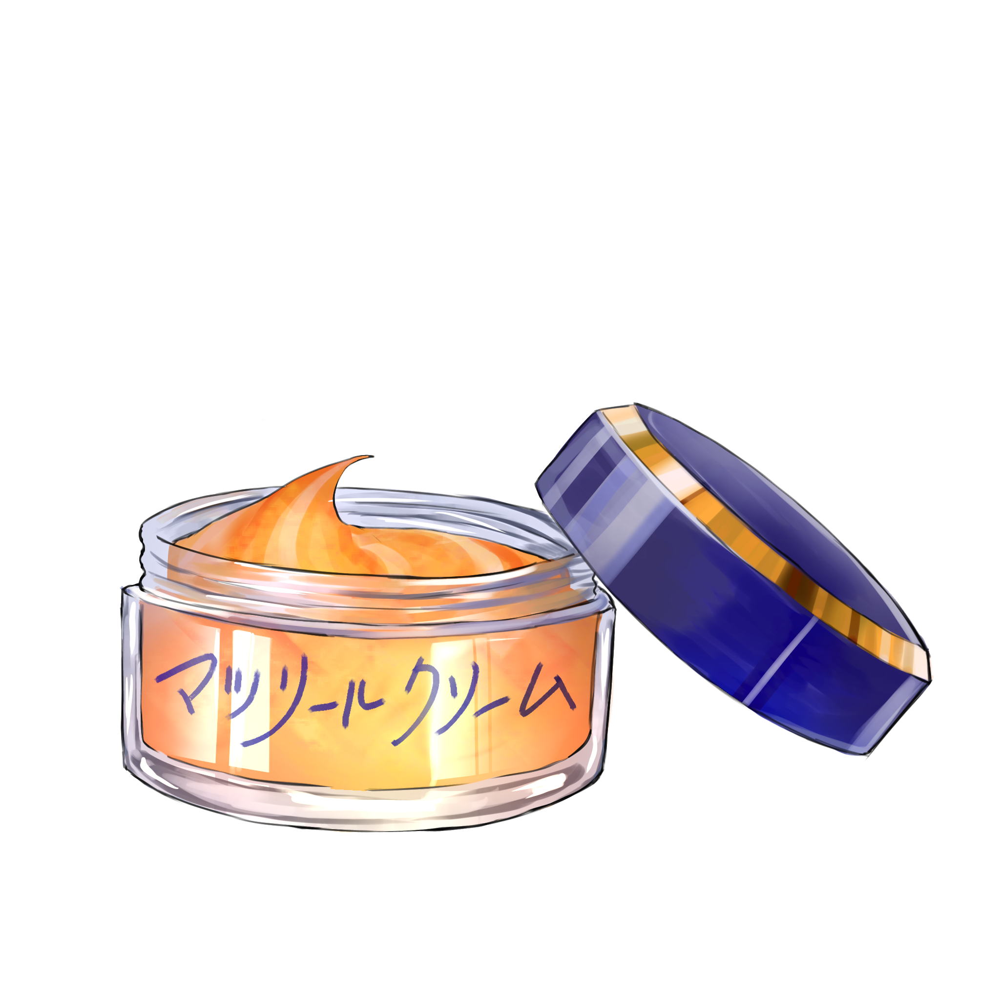

マツリームクリーム

【効果・効能】
夕方のひんやりした空気と夏の熱を帯びた香りが肌に広がり、
夏の夕方に行われる「祭り」特有の高揚感をもたらします。
太鼓の音や提灯の灯り、人々の賑やかな声...
日常の輪郭が少しづつ溶けていき、
非日常的な祭りの高揚と心地よい疲れが混ざり合い、
眠っていたおてんばな心を呼び覚まします。
【成分】
・提灯の灯り
・太鼓の振動
・人混み
・夕方の風
・夕日
【服用時点】
太鼓の音と人の賑やかさに導かれた時
【副作用】
使用してから一定時間経過すると、もの寂しさを感じます
【生産地】
トウキョウ
【製造会社名】
みんみん調剤所
製造者からひとこと
小さい頃によく行っていた夏祭りは、初めて屋台のかき氷食べた場所であり、
わずかばかりのお小遣いを奮発する特別な場所でした。
振りもわからないまま、
見様見真似で輪に入って踊った盆踊りの高揚感は今でも覚えています。
小学校中学年にあがってからは足が遠のいてしまいましたが、大人になった今でも、
遠くから聞こえる太鼓の音にどうしても心が惹かれてしまいます。
あの賑やかな空気感を、日常のふとした瞬間に思い出せるような、
優しい余韻をこのお薬に込めました。